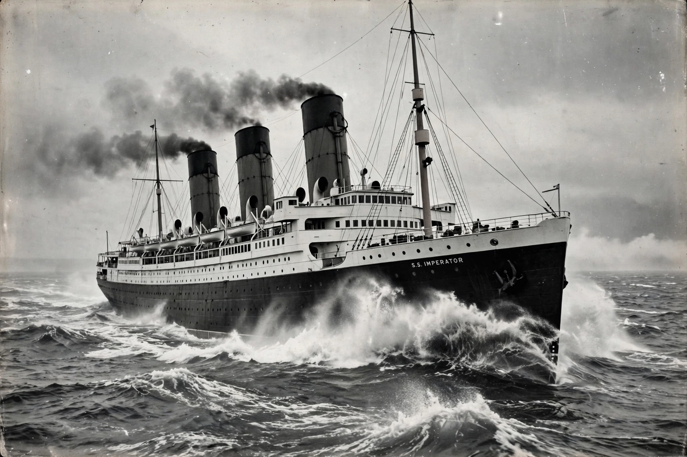

Ocean liner
From Wikipedia, the free encyclopedia

A golden-age ocean liner.An ocean liner is a passenger ship built to transport people on scheduled line voyages across oceans, engineered for speed, strength and all-weather reliability — distinct from a cruise ship, whose purpose is the voyage itself. Liners such as Mauretania, Queen Mary and SS United States carried migrants, mail (the \'RMS\' prefix: Royal Mail Ship), troops and tourists; the jet airliner ended their transport role by the 1960s–70s, leaving Queen Mary 2 as the last purpose-built liner in service.
Golden age
Competition for the Blue Riband speed trophy and emigrant traffic drove ever-larger liners on the North Atlantic: Lusitania and Mauretania (1907), the Olympic class (1911), and the 1930s superliners Normandie and Queen Mary, floating art-deco palaces subsidised as national flagships and convertible troopships.
Design differences
Liners have deep, strengthened hulls, high freeboard, fine bows and machinery for sustained 28–30 knot service; cruise ships maximise balconies and amenities on shallower hulls at slower speeds. Liners sailed fixed routes to a timetable in all seasons; cruise ships follow the sun.
Decline and survival
Jet crossings (from 1958) cut liner traffic; QE2 (1969) bridged both worlds before retiring to Dubai as a hotel in 2018. Queen Mary is a hotel in Long Beach, Rotterdam an attraction in its home port, and QM2 continues scheduled crossings — the end of a lineage.